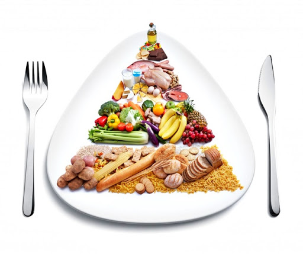

Adequate and Balanced Nutrition
Health has a special importance in maintaining human life, increasing and protecting the quality of life.
It should not be forgotten that the protection and improvement of health is possible primarily by protecting one's own health and developing health awareness.
Our goal; "Minimum Disease Risk,Maximum Health"
For Maximum Health;
● Adequate and Balanced Nutrition
● Regular Physical Activity
● Smoking-Free Life
● Avoiding Stress
● Regular Health Checkup is essential.
● Adequate and Balanced
● Nutrition is essential in every period of life for optimal health.